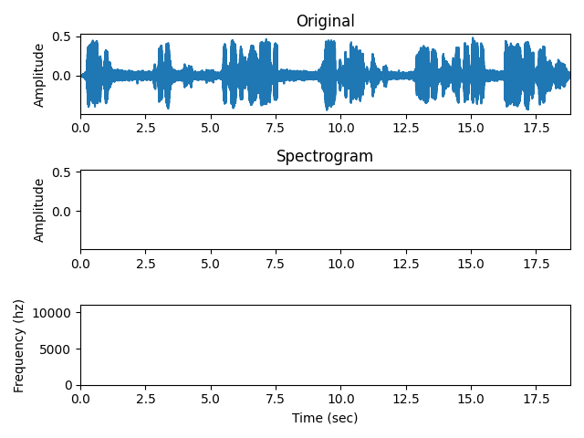

Note
Click here to download the full example code
Generate vocoded stimuli¶
This shows how to make simple vocoded stimuli.
@author: larsoner
Out:
2019-04-19 00:15:24,625 - INFO - Read WAV file with 1 channel and 414951 samples (format int16)
import numpy as np
import matplotlib.pyplot as plt
from expyfun.stimuli import vocode, play_sound, window_edges, read_wav, rms
from expyfun import fetch_data_file
print(__doc__)
data, fs = read_wav(fetch_data_file('audio/dream.wav'))
data = window_edges(data[0], fs)
t = np.arange(data.size) / float(fs)
# noise vocoder
data_noise = vocode(data, fs, mode='noise')
data_noise = data_noise * 0.01 / rms(data_noise)
# sinewave vocoder
data_tone = vocode(data, fs, mode='tone')
data_tone = data_tone * 0.01 / rms(data_tone)
# poisson vocoder
data_click = vocode(data, fs, mode='poisson', rate=400)
data_click = data_click * 0.01 / rms(data_click)
# combine all three
cutoff = data.shape[-1] // 3
data_allthree = data_noise.copy()
data_allthree[cutoff:2 * cutoff] = data_tone[cutoff:2 * cutoff]
data_allthree[2 * cutoff:] = data_click[2 * cutoff:]
snd = play_sound(data_allthree, fs, norm=False, wait=False)
# Uncomment this to play the original, too:
# snd = play_sound(data, fs, norm=False, wait=False)
ax1 = plt.subplot(3, 1, 1)
ax1.plot(t, data)
ax1.set_title('Original')
ax1.set_ylabel('Amplitude')
ax2 = plt.subplot(3, 1, 2, sharex=ax1, sharey=ax1)
ax2.plot(t, data_noise)
ax2.set_title('Vocoded')
ax3 = plt.subplot(3, 1, 3, sharex=ax1)
ax2.set_title('Spectrogram')
ax2.set_ylabel('Amplitude')
ax3.specgram(data_noise, Fs=fs)
ax3.set_xlim(t[[0, -1]])
ax3.set_ylim([0, fs / 2.])
ax3.set_ylabel('Frequency (hz)')
ax3.set_xlabel('Time (sec)')
plt.tight_layout()
plt.show()
Total running time of the script: ( 0 minutes 1.119 seconds)